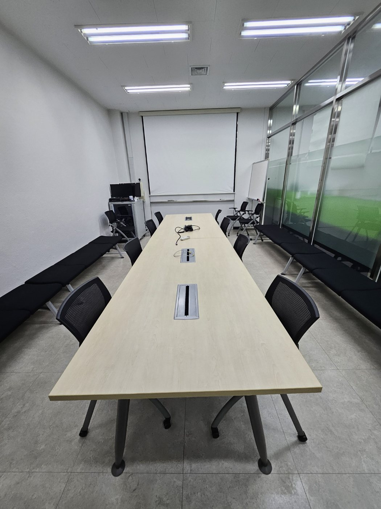
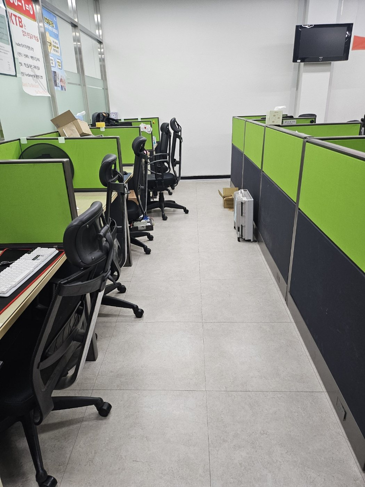

김해 진례공단 기업체 사무실 정기청소 | 회의실·업무공간 관리
김해 진례공단권 기업체 사무실 정기청소 현장입니다. 업무공간과 회의실처럼 직원 이용이 많은 구역은 바닥 먼지와 생활오염이 빠르게 쌓이기 때문에 좌석 사이 통로, 테이블 주변, 벽면 가장자리까지 함께 관리하는 것이 중요합니다.
현장 사진으로 보는 작업 내용
회의실과 좌석 사이 통로, 사무공간 바닥을 중심으로 실제 관리 상태를 확인할 수 있습니다. 정기청소는 눈에 잘 보이는 중앙부만 닦는 것이 아니라 가구 주변과 이동 동선까지 함께 정리해야 전체 공간의 청결감이 오래 유지됩니다.

회의실 바닥과 좌석 주변 정리
회의실은 여러 사람이 반복해서 이용하는 공간이라 의자 바퀴 주변과 테이블 아래쪽에 먼지가 쉽게 모입니다. 좌석 사이 통로를 정리하고 바닥 전체를 균일하게 관리해 다음 이용자가 바로 사용할 수 있는 상태로 마무리합니다.

회의실 측면과 벽면 동선 관리
테이블 중심부뿐 아니라 벽면 쪽 대기 의자 주변과 가장자리에도 먼지가 쌓이기 쉽습니다. 평소 눈에 잘 띄지 않는 측면 공간까지 함께 확인해 전체적인 청결도를 맞춥니다.

회의공간 전체 마감 상태 확인
청소 후에는 바닥에 남은 얼룩과 잔여 먼지를 다시 확인하고 의자와 테이블 주변 동선을 정돈합니다. 공간 전체가 고르게 정리되어야 실제 이용 시에도 깔끔한 인상을 유지할 수 있습니다.

사무실 좌석 사이 통로 관리
파티션형 사무실은 직원 이동이 집중되는 중앙 통로와 좌석 사이 바닥이 빠르게 오염됩니다. 의자 바퀴 주변과 파티션 가장자리까지 확인하면서 업무공간의 먼지와 잔여물을 정리합니다.
김해 사업장 청소 무료 방문견적
사무실, 공장, 학원, 상가, 화장실, 회의실 등 사업장 유형과 이용량에 맞춰 작업 범위와 관리 주기를 상담합니다.